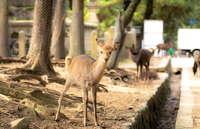
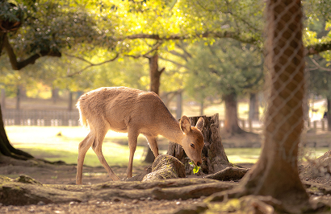

About Page
Why Urban Deer are An Issue
There are many issues involved with the deer population, but two main issues are different diseases among deer and environmental factors. Deer issues do not occur randomly, the human population takes a big part in the issues occurring. Urban deer creates conflicts with people, infrastructure, and ecosystems.
Urban deer have increasingly been a problem in the last 30-40 years. In the last three decades urban deer management and conflicts have been recognized. Many states as of now have formal deer management plans that address these urban issues.
Climate Change and the Environment
Climate change has a huge impact on deer and their habitats due to changing weather patterns that affect their survival, behavior, and distribution. Deer also play a big part in the environment and since deer are a major part of many ecosystems, their population changes can ripple through affecting plants, predators, and even human land use. These changes on deer based on climate change and the environment can have significant ecological and human impacts.
The Creator
Lexi Howell, Design and Visual Communication Student
Project Details
For this project, I am sharing information about the decreasing deer population and why that's happening. Most issues stem from environmental changes, human conflict, and deforestation. These issues lead deer away from their habitats and many deer end up in urban areas. Being in urban areas causes a lot of conflicts with humans and infrastructure and then wildlife management comes into play.
In my Intro to Design class we were prompted to research a social cause and make a few illustrations based on what we thought was important. My social cause was about the decreasing deer population and I found out that urban areas and climate change were the main issues. My idea for illustrations were to show deer crossing a city street with a deer crossing sign, which is an unnatural place for deer and that type of sign to be. I wanted to show that deer being in the city was not natural nor should be a normal occurrence.

